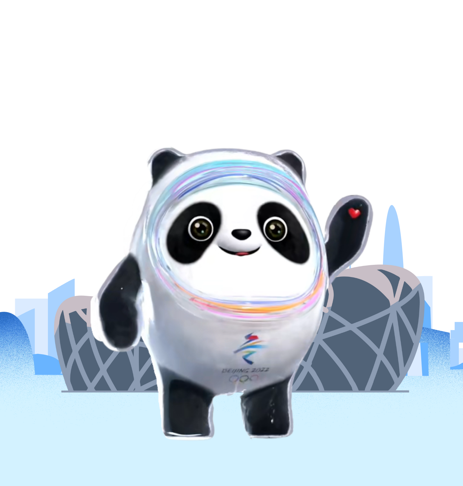

2022年北京冬奥会项目简介
2022年北京冬奥会共设有7个大项、15个分项、109个小项，场馆分布在北京赛区、延庆赛区和张家口赛区。7个大项分别为滑冰、滑雪、冰壶、冰球、雪橇、雪车和冬季两项。本届冬奥会新增7个项目，分别是女子单人雪地摩托、短道速滑混合团体接力、跳台滑雪混合团体、自由式滑雪大跳台、自由式滑雪空中技巧混合团体和单板障碍追逐混合团体。
冬奥会项目原理
冬奥会项目是由大项（Sport）、分项（Discipline）和小项（Event）组成。
一个大项（Sport）对应一个国际联合会（IF） 。
一个大项包含一个或多个分项；一个分项（Discipline）包含一个或多个小项。
一个小项（Event）对应一块金牌。

冬奥会项目历史
2002年盐湖城冬奥会，冬奥会7个大项15个分项的新格局正式确立。21世纪冬奥会大项和分项得以固定，但小项仍然在不断发生变化：2014年索契冬奥会国际奥委会增加了12个小项，使竞赛项目达到了98项。2018年平昌冬奥会冬奥小项增至102项，首次突破100大关。2022年北京冬奥会将新增7个小项，分别为女子单人雪车、短道速滑混合接力、跳台滑雪混合团体、自由式滑雪男子大跳台、自由式滑雪女子大跳台、自由式滑雪空中技巧混合团体、单板滑雪障碍追逐混合团体，届时总共将进行109个小项的比赛，金牌总数增至109枚。